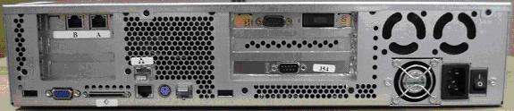
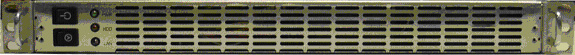
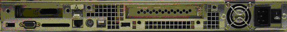

Operating Documentation
Direction 5193891-800, Rev# 5
LightSpeed 5.X Pro16 Limited Access Service Information (Adv)
Operating Documentation |
| Required Persons | Preliminary Reqs | Procedure | Finalization |
|---|---|---|---|
| 1 | Timing Not Applicable | 70 -105 | 20 mins |
This module describes the procedures used to replace the DARC2 Node in the GOC4 Console. After the DARC2 Node has been replaced and loaded with software, several tests are required:
Perform DARC OS software load from Host per LFC
Perform DARC Apps software load from Host per LFC
Communication and verification within the DARC2
Communication to the IG Node(s) and DARC2
Recon Data Path Diagnostic
Resave of the System State Reconfig Info
Sanity scans
| NOTE: | Jarrell DARC2 and Jarrell IG Nodes require a software release of 06MW29.7 or greater. |
| Last Revised: | 12 May 2008 |
| Item | Qty | Effectivity | Part# | Manufacturer | |
|---|---|---|---|---|---|
| Medium Phillips Screwdriver | 1 | - | - | - | |
| Item | Qty | Effectivity | Part# | Manufacturer | |
|---|---|---|---|---|---|
| DARC2 (Westville) | 1 | 4/8/16-slice GDAS & 16-slice MDAS | 5114772 | Omni Tech Corp Dedicated Computing | |
| - | - | 4/8-slice MDAS | 5114772-2 | Omni Tech Corp Dedicated Computing | |
| - | - | 4-slice SDAS | 5114772-3 | Omni Tech Corp Dedicated Computing | |
| DARC2 (Jarrell) | 1 | 4/8/16-slice GDAS & 16-slice MDAS | 5147442 | Omni Tech Corp Dedicated Computing | |
| - | - | 4/8-slice MDAS | 5147442-2 | Omni Tech Corp Dedicated Computing | |
| - | - | 4-slice SDAS | 5147442-3 | Omni Tech Corp Dedicated Computing | |
| All cable connector screw-locks must be finger-tightened, only. Do NOT use any tool to tighten cable screw-locks. | |
| Condition | Reference | Eff |
|---|---|---|
Understand the conventions used in this publication | - | |
Only trained service personnel should service the GE CT Scanner. | - | - |

Select one of the following methods to Power OFF the Operator Console:
If Applications are up, click on the [Shut Down] button and select [Shutdown] .
| (For 06MW03.X Software) Wait 1-2 minutes after the “System halted” message appears, to allow the DARC Node to properly power-down. Future SW releases (e.g., 06MW29.7) have corrected this issue. | |
If Applications are down, open a Unix Shell at the Toolchest. Type:
{ctuser@hostname} halt
The Operator Console monitor will display a 'System halted' message when it is acceptable to power OFF the Operator Console.
Power OFF the Operator Console at the front panel switch. See Illustration 1.
| NOTE: | Do not turn off the DARC2 Node Rear Power Switch (if present). |
Illustration 1: Power Switch

Remove the front and rear Operator Console covers.
Verify each cable label is present and clearly marked; if necessary, add a label for clarity.
Disconnect all rear DARC2 Node cables.
Refer to Table 1 for cables to be removed.
(Please see Illustration 2 and Illustration 3, for DARC2 Node Types and connection information.)
Table 1: Cables to be Disconnected at DARC2 Node
| Reference Designator | DARC Connection | Connection |
| B or IG1 | IG1 Ethernet port 1 | IG 1 Node Ethernet port 0 |
| A or IG2 | IG2 Ethernet port 0 | IG 2 Node Ethernet port 0 |
| Network Sticker or IG3 | IG3 Ethernet port 3 | IG 3 Node Ethernet port 0 |
| No sticker or Host | Host Ethernet port 2 | Host Computer port C |
| DIP RX | DIP (verify not connected to TX) | Console Interface Bulkhead Assembly |
| DIP Scan Abort | J53 DIP Scan Abort | ICOM J53 |
| RHARD | J54 RHARD | ICOM J54 |
| Power | Power | Power Distribution Box |
| SCSI | Not Used for GOC4 (memory disks are internal to DARC2 Node) | Not Used for GOC4 (memory disks are internal to DARC2 Node) |
Remove and retain the four (4) front mounting screws and slide out the DARC2 Node.
Verify the replacement DARC2 Node is correct for the Site DAS Type. Refer to the color-coded sticker located on the front panel of the DARC2 Node for DIP type information.
Illustration 2: Jarrell DARC2 Node
(Sheet 1 of 2)

(Sheet 2 of 2)

Illustration 3: Westville DARC2 Node
(Sheet 1 of 2)

(Sheet 2 of 2)

Slide the replacement DARC2 Node into the Operator Console from the front.
Replace the four (4) front mounting screws on the front of the DARC2 Node.
Reconnect the DARC2 Node cables, using Illustration 2 and Illustration 3 above as a guide. (Refer to the proper Illustration, depending on DARC2 Node version.)
| All cable connector screw-locks must be finger-tightened, only. Do NOT use any tool to tighten cable screw-locks. | |
If present, verify the power switch located at the rear of the DARC2 Node is in the ON position.
Power ON the Operator Console at the front switch.
At the DARC2 Node verify the front panel Power (PWR) LED is on. If not press the front panel power switch (hold 3-10 seconds) to apply power to the DARC2 Node.
At each IG Node, verify the front panel Power (PWR) LED is on. If not press the front panel power switch (hold 3-10 seconds) to apply power to each IG Node. See Illustration 4 or Illustration 5, depending on IG Node version.
Illustration 4: “Jarrell” IG Node
(Sheet 1 of 2)

(Sheet 2 of 2)

Illustration 5: “Westville” IG Node
(Sheet 1 of 2)

(Sheet 2 of 2)

Stop Applications from auto-starting at the 5 second PINK Box.
The DARC2 Node must be up to load the OS (Operating System and DARC Application software. Perform the telnet command on the DARC2 Node to verify communication, as follows:
At the Toolchest, with Application software down, open a Unix Shell.
Perform the telnet command to the DARC2 Node from the Host Computer:
{ctuser@hostname} su -
Password: #bigguy
[root@hostname] service cliservice start
dpcproxy server will be reported as already running or restarted
[root@hostname] telnet localhost 623
Trying 127.0.0.1...
Connected to localhost.
*** Indicates cliservice proxy server is running ***
Escape character is '^]'.
Server: darc
Username: <Enter>
Password: <Enter>
Login successful << *** Indicates the SOL connection is established ***
dpccli> exit
Connection closed by foreign host.
[root@hostname]
| NOTE: | If the telnet connection fails: Load the SOL CD, if available, for current version of Software into the DARC2 Node and press the DARC Node reset switch (or re-power DARC2 Node if necessary). SOL CD will auto-eject when completed. Verify the DARC2 Node is running on the Host Computer using the ifconfig command. Verify the Ethernet cabling between the Host Computer (port C) and DARC2 Node. |
Confirm the Host Computer Software type. Examples are shown, the software version output should match the Software media to be loaded.
Open a Unix Shell.
Type the following to verify software version information. Examples are provided. The examples are not actual output.
{ctuser@hostname} swhwinfo << for Apps version
(year)MW(fiscal week).(fiscal day).hardware revision info here
Example 1: 06MW03.4.V40_H_V64_G_GTL
Example 2 (supports Jarrell hardware): 06MW29.7.V40_H_V64_G_GTL
| NOTE: | If the revisions do NOT match the software media to be
loaded, locate the proper software set. If the software set cannot
be found or ordered, a full LFC will be required for the Operator
Console. If the revisions match the software media to be loaded, continue with the load procedure |
{ctuser@hostname} swhwinfo –o << for OS version
Release: GEHC/CTT Linux 4.3.16
Built: Tue Jul 12 12:29:10 CTD 2005
| NOTE: | Confirm that the results match the Operating System version and Software Build Date shown on the OS and Applications DVDs. |
The DARC2 Node must be loaded with the OS and Application software from the Host Computer to the DARC2 Node. Set-up the DARC2 Node Boot Order BIOS to allow the software to load from the Host Computer. Perform the DARC2 Node OS (Operating System) load as described in the LFC (load From Cold) procedure for the software set being used. Perform the DARC2 Node Application software load as described in the LFC (Load From Cold) procedure for the software set being used. Return the DARC2 Node Boot Order BIOS (reset to original configuration) to avoid problems with the DARC2 Node Motherboard bootup. Refer to the appropriate LFC procedure and follow the sub-sections after reading the DARC Subnet information outlined below:
| NOTE: | The OS (Operating System) and Application software version loaded onto the DARC2 Node must match the OS and Application software versions loaded on the Host Computer. |
Perform the DARC2 Node OS (Operating System) load as described in the LFC (Load From Cold) procedure for the software set being used.
| NOTE: | If the OS software fails to load successfully on the DARC2 Node from the Host Computer. |
Check the DARC Node Boot Order BIOS
Refer to the “LFC - DVD OS Installation on DARC” section of the appropriate LFC Procedure
Perform a DARC2 Applications software load (as described in the LFC procedure for the software set being used) on the DARC2 Node from the Host Computer per the normal instructions. Refer to the DARC Subnet Note below.
| NOTE: | DARC Subnet Address Information: The following procedure
should be performed if your customer Ethernet hospital backbone begins
with 172.16.0.xx, OR if the scanner will connect to a device with
an IP address of 172.16.0.xx.
|
Perform the DARC2 Node Boot Order BIOS (reset back to original configuration) as described in the LFC (Load From Cold) procedure for the software set being used.
With Application Software Down, the DARC2 Node must be checked to verify communication between the Host Computer and the DARC2 Node. Perform ping and rsh commands on the DARC2 Node, as follows:
| NOTE: | For a Ethernet cabling connection issues, use the ethtool command (ethtool –p eth# where # represents the Ethernet address)
as root on the Host Computer, DARC2 Node or IG Node to determine if
the Ethernet cable is correctly connected. The port will blink or
flash when activated and <Ctrl+C> will stop the
test. This command must be performed as root. Open a Unix Shell and type the following
|
At the Toolchest, with Application software down, open a Unix Shell.
| NOTE: | If the DARC login prompt [root@darc] is not present, then the Application software load has not been successful. If the DARC login prompt [root@localhost root] is present, then reloading the DARC Node OS again per the procedure. If ping darc command fails perform an ifconfig on the Host and verify the DARC is RUNNING and the address is correct. Check the Ethernet cable. Re-power the Operator Console, after a halt, as required to troubleshoot. |
Ping the DARC2 Node:
{ctuser@hostname} ping darc
Verify ping is successful.
Output similar to the following will appear:
PING darc (172.16.0.2) from 172.16.0.1 : 56(84) bytes of data. 64 bytes from darc (172.16.0.2): icmp_seq=1 ttl=64 time=0.157 ms
Press <Ctrl+C> to stop ping process.
Output similar to the following will appear:
--- darc ping statistics ---
4 packets transmitted, 4 received, 0% loss, time 3000ms
rtt min/avg/max/mdev = 0.134/0.168/0.209/0.031 ms
Remote Shell to the DARC2 Node:
{ctuser@hostname} rsh darc
Last login: Thu Oct 9 11:17:35 on ttyS1
{ctuser@darc}
Verify ctuser@darc prompt is present.
Verify the DARC2 Node DIP board type (see table, below).
{ctuser@darc} cat /proc/driver/dip
| DIP Board Type | Example Output (updated Sept 2006) |
| 4/8/16-slice GDAS & 16-slice MDAS | DIP Device Driver Version x.x compiled date time MDAS 16-Slice DIP Installed: 2363229 B - or - 2363229 C Jarrell must be version C Westville may be version B or C |
| 4/8-slice MDAS | DIP Device Driver Version x.x compiled date time MDAS 8/4-Slice DIP Installed: 2375741 E - or - 2375741 F Jarrell must be version F Westville may be version E or F |
| SDAS 4-Slice | DIP Device Driver Version x.x compiled date time SDAS 4-Slice DIP Installed: 2378286 D - or - 2378286 E Jarrell must be version E Westville may be version D or E |
Verify the DARC2 Node DAS Interface Processor Board (DIP) Diagnostics pass.
{ctuser@darc} DipDiag -x 1,2,3,4,5,6
| NOTE: | Because tests 7 and 8 require the installation of a loopback cable, they are not being performed. |
12:05:40 opening LINUX device /dev/dip
creating H16 dip interface
| NOTE: | IGNORE the H16 reference in the previous line. |
DIP PN : Part Number Board Version Letter
| NOTE: | An example of the DAS Interface Processor Board (DIP) is provided. The specific DIP Board & Revision information will be identified for the DARC2 Node type. |
test 1 Passed X-ray Enable Relay test 2 Passed Test FEC Bit test 3 Passed Test EDDR Bit test 4 Passed Test Magic Number Register fill mem write to dip took 4.714 sec verifying memory read from dip took 19.469 sec test 5 Passed Memory Test test 6 Passed Interrupt Test 1 loops 0 failures
| NOTE: | The Unix Shell will be used again, so do not exit or close at this time. |
Remove the power for each IG Node, then re-power each IG Node with the DARC2 Node up and able to Remote Shell (rsh darc).
At each IG Node, verify the power is OFF. If power is On for any IG Node, then press the front panel power switch (hold 3-10 seconds) to remove power to each IG Node present in the Operator Console.
Wait 20 seconds.
At each IG Node, press the front panel power switch (hold 3-10 seconds) to apply power to the IG Node(s).
Wait 2 minutes for each IG Node present in the Operator Console to boot up.
The DARC2 Node must be up to check the IG Node(s). Perform ping and rsh commands on the DARC2 Node, as follows:
| NOTE: | For a Ethernet cabling connection issues, use the ethtool
command (ethtool –p eth# where # represents the Ethernet address)
as root on the Host Computer, DARC2 Node or IG Node to determine if
the Ethernet cable is correctly connected. The port will blink or
flash when activated and Ctrl-C will stop the test. This command must
be performed as root.
|
At the Toolchest, with Application software down, if necessary, open a Unix Shell.
Ping IG Node #1:
{ctuser@darc} ping ig1
Verify ping is successful.
Press <Ctrl+C> to stop ping process.
Remote Shell to the IG Node #1:
{ctuser@darc} rsh ig1
Verify ctuser@ig1 prompt is present.
Exit from the IG Node #1 Remote Shell:
{ctuser@ig1} exit
Ping IG Node #2:
{ctuser@darc} ping ig2
Verify ping is successful.
Press <Ctrl+C> to stop ping process.
Remote Shell to the IG Node #2:
{ctuser@darc} rsh ig2
Verify ctuser@ig2 prompt is present.
Exit from the IG Node #2 Remote Shell:
{ctuser@ig2} exit
Ping IG Node #3:
{ctuser@darc} ping ig3
Verify ping is successful.
Press <Ctrl+C> to stop ping process.
Remote Shell to the IG Node #3:
{ctuser@darc} rsh ig3
Verify ctuser@ig3 prompt is present.
Exit from the IG Node #3 Remote Shell:
{ctuser@ig3} exit
Exit from the DARC Node Remote Shell:
{ctuser@darc} exit
{ctuser@hostname}
In the following test, the Disk Array is configured with 2 disks (internal to the DARC2 Node). Visually verify the entire output is successful from the command script performed. The final output line ‘gre-raid success’ does not mean the 2 Disk Array is good.
| NOTE: | This procedure is applicable only to 06MW03.x software or newer. For older versions of software, perform the following: |
| NOTE: | Application Software must be down. |
Type the following:
{ctuser@hostname} rsh darc
{ctuser@darc} sudo gre-raid -z -c
answer: yes
Verify the create partitions diagnostic passes and all output looks good.
{ctuser@darc} sudo gre-raid -a
Verify assemble diagnostic passes and all output looks good.
{ctuser@darc} sudo gre-raid -q
Verify query diagnostic passes and all output looks good.
{ctuser@darc} exit
{ctuser@hostname}
| NOTE: | The Unix Shell will be used again, so do not exit or close at this time. |
In the following test, the Image Generator Node(s) RAC (Recon Accelerator Card) will be tested.
| NOTE: | Application Software must be down. |
{ctuser@hostname} racdiags
| NOTE: | The command racdiags will test up to three (3) IG Node
RAC’s. If only one (1) IG Node is present in the Operator Console
ignore any errors associated with IG2 or IG3. To test a single IG
Node perform the following command: {ctuser@hostname} racdiags 1 |
Verify rac diagnostic passes for each IG Node configured in the Operator Console.
| NOTE: | The Unix Shell will be used again, so do not exit or close at this time. |
{ctuser@hostname} st
The Reconstruction (not Scan) portion of the system can be tested at this point.
Verify the FSA Box is Idle (not Paused). If paused, click on Recon Management and Restart the Queue.
Select [RETRO RECON] on the left Monitor.
Select [RAT GOLD] series.
Select [SELECT SERIES] .
Select [CONFIRM] .
Verify the image(s) reconstruct and are displayed.
Select [QUIT] .
Select the Service Icon.
Select [DIAGNOSTICS] .
Select [Recon Data Path] .
Select [1] and [ALL]
Select [RUN]
Verify Recon Data Path tests pass.
Select [Dismiss] .
After the DARC Node software load (OS and Apps), the Reconfig Info file must be re-saved on the System State DVD-RAM.
Insert the System State DVD-RAM into the SCSI Tower DVD RAM drive.
Wait until the DVD drive is ready (i.e., until the front panel green LED is no longer lit).
Select: Service icon to access the CSD (Common Service Desktop).
Select: [Utilities] .
Select: [System State] .
Illustration 6: System State GUI

Select [Reconfig Info] .
Select [Save] .
If applicable, select [Yes] when the following message appears: System State Media Status: Please insert a DVD into the drive and press Save again.
Illustration 7: Save System State Ready

| NOTE: | Verify that the "Save" of System State was successful. If not, correct any errors and re-save the Reconfig Info file on the System State DVD-RAM. A message at the end of the Save should state: Save/Restore System State: Completed Successfully. |
When completed, select [CANCEL] .
| Do NOT select [DISMISS] more than once. Doing so will result in the GUI becoming hung, and the System State will be unusable. Should this occur, Re-Save the System State again. | |
When completed, select [Dismiss] .
Close the Service Desktop window at the upper left corner of the screen
Perform sanity scans (e.g., scout, axial and helical).
| NOTE: | If the System will not scan or reconstruct verify the memory on the DARC2 Node is correct (lhinv). Verify the DIP diagnostics pass Verify the RAC diagnostics pass. |
Verify the image(s) reconstruct and are displayed.
Install the front and rear Operator Console covers.